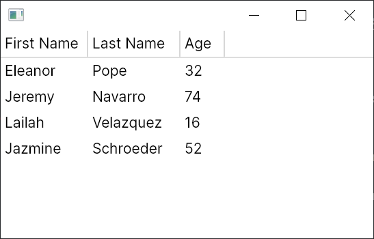

Creating a Flat TreeDataGrid
There are two parts to any TreeDataGrid:
- The "Source" which is defined in code and describes how your data model will map to the rows and columns of the
TreeDataGrid - The control which can be instantiated from XAML or from code and describes how the
TreeDataGridwill appear
The source is usually defined at the view model layer if you're using the MVVM pattern but can also be defined in code-behind. This introduction will assume that you're using the MVVM pattern.
This article assumes that you are using C# 10 and have nullable reference types enabled.
Installation
First follow the installation instructions, ensuring that you add the theme to your App.axaml file.
The Data Model
The data model is your "source" data that will be displayed in the TreeDataGrid and will be specific to your application. For this introduction we will be using a very simple Person class:
public class Person
{
public string? FirstName { get; set; }
public string? LastName { get; set; }
public int Age { get; set; }
}
First we create a MainWindowViewModel containing our simple dataset:
using System.Collections.ObjectModel;
using Avalonia.Controls;
using Avalonia.Controls.Models.TreeDataGrid;
public class MainWindowViewModel
{
private ObservableCollection<Person> _people = new()
{
new Person { FirstName = "Eleanor", LastName = "Pope", Age = 32 },
new Person { FirstName = "Jeremy", LastName = "Navarro", Age = 74 },
new Person { FirstName = "Lailah ", LastName = "Velazquez", Age = 16 },
new Person { FirstName = "Jazmine", LastName = "Schroeder", Age = 52 },
};
}
We store the data in an ObservableCollection<T> which will allow the TreeDataGrid to listen for changes in the data and automatically update the UI.
The TreeDataGrid source
The source defines how to map the data model to rows and columns. Because we're displaying non-hierarchical data, we'll use a FlatTreeDataGridSource<Person>. FlatTreeDataGridSource is a generic class where the type parameter represents the data model type, in this case Person.
The constructor to FlatTreeDataGridSource accepts a collection of type IEnumerable<T> to which we'll pass our data set.
We'll create the source in the MainWindowViewModel constructor, add three columns, and expose the source in a property:
public class MainWindowViewModel
{
private ObservableCollection<Person> _people = /* defined earlier */
public MainWindowViewModel()
{
Source = new FlatTreeDataGridSource<Person>(_people)
{
Columns =
{
new TextColumn<Person, string>("First Name", x => x.FirstName),
new TextColumn<Person, string>("Last Name", x => x.LastName),
new TextColumn<Person, int>("Age", x => x.Age),
},
};
}
public FlatTreeDataGridSource<Person> Source { get; }
}
The columns above are defined as TextColumns - again, TextColumn is a generic class that accepts the data model type and a value type. The first parameter is the header to display in the column and the second parameter is a lambda expression which selects the value to display from the data model.
The TreeDataGrid control
It's now time to add the TreeDataGrid control to a window and bind it to the source.
<Window xmlns="https://github.com/avaloniaui"
xmlns:x="http://schemas.microsoft.com/winfx/2006/xaml"
x:Class="AvaloniaApplication.MainWindow">
<TreeDataGrid Source="{Binding Source}"/>
</Window>
Run the Application
Run the application and you should see the data appear:
